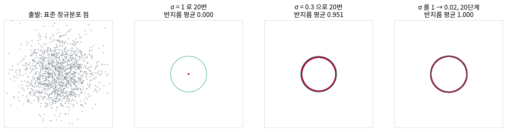
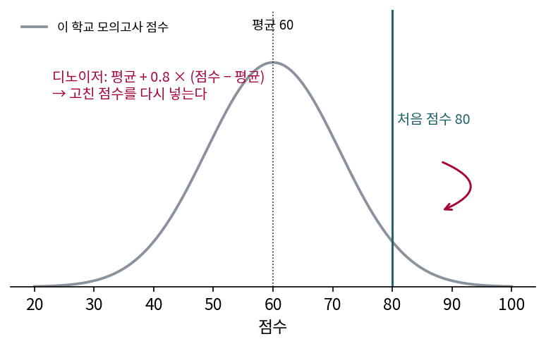
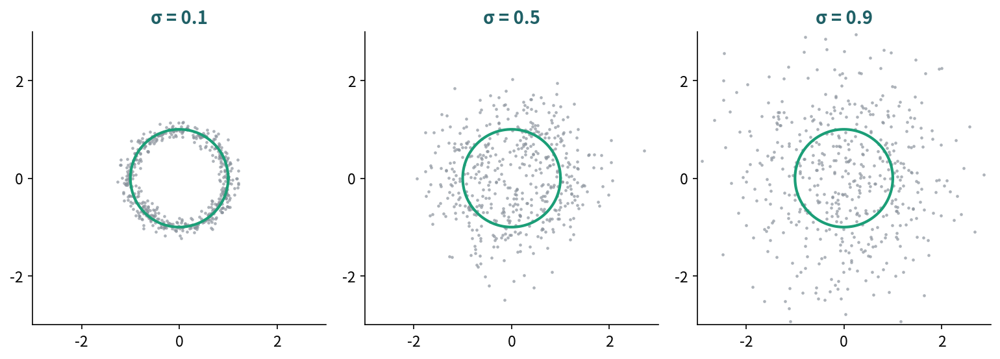
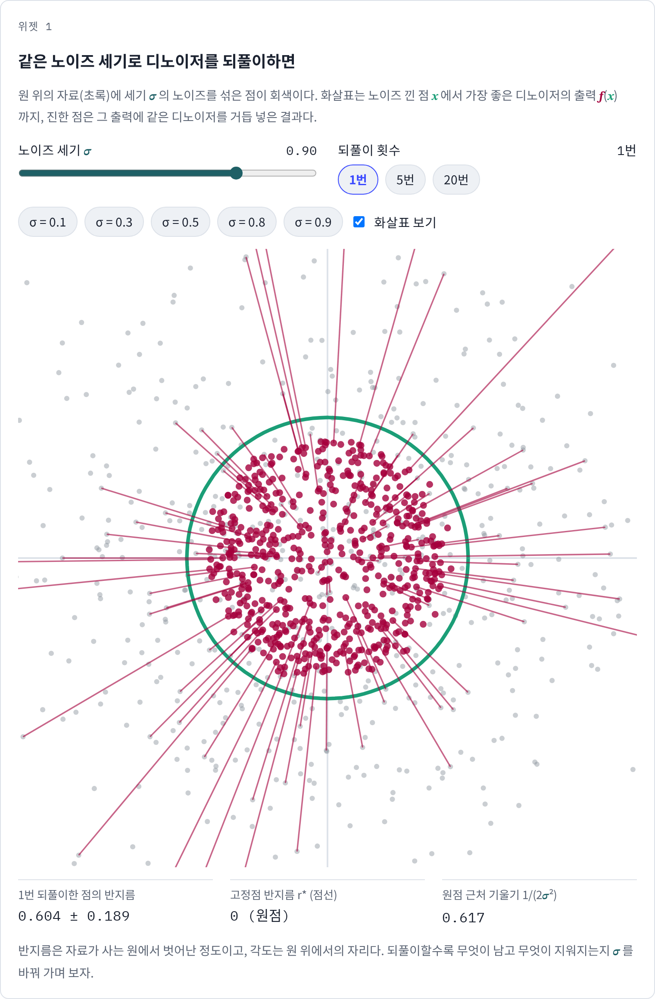
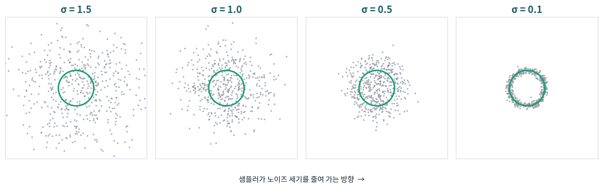

고정점: 같은 디노이저를 되풀이하면 남는 것
사진 앱의 노이즈 제거를 한 번 누르면 자글자글함이 사라지는데, 그 버튼을 열 번, 스무 번 누르면 어떻게 될까? 피부가 플라스틱처럼 매끈해지고 잔무늬가 모두 사라진 사진을 본 적이 있을 것이다. 가장 좋은 디노이저는 자료가 사는 곳으로 점을 끌어당긴다고 했는데, 같은 디노이저에 그 출력을 다시 넣으면 점은 자료가 사는 곳에 머물까, 더 끌려갈까? 거듭 고친 끝에 남는 것은 자료의 무엇일까?
원 위 자료로 되풀이하기
원 위 자료에서 노이즈 낀 점 20,000개를 만들고, 같은 σ 의 가장 좋은 디노이저를 1번, 5번, 20번 거듭 썼다(s3_iterate.py). 표의 반지름은 평균 ± 표준편차다.
| 노이즈 세기 σ | 출발 | 1번 | 5번 | 20번 |
|---|---|---|---|---|
| 0.3 | 1.046 ± 0.294 | 0.951 ± 0.024 | 0.951 ± 0.000 | 0.951 ± 0.000 |
| 1.0 | 1.548 ± 0.777 | 0.557 ± 0.187 | 0.033 ± 0.010 | 0.000 ± 0.000 |
σ = 0.3 이면 한 번만 고쳐도 반지름이 0.951 근처로 모이고, 다섯 번이면 모든 점의 반지름이 같아진다. 각 점의 각도는 몇 번을 고쳐도 출발점의 각도에서 바뀌지 않았다(차이 0.00°). 원 위 자료는 모든 방향이 똑같이 그럴듯하니, 디노이저는 점을 지름 방향으로만 옮기기 때문이다. 반지름은 버리고 각도만 남겨서, 처음에 칸 두 개로 적히던 점이 각도 하나로 적히게 되었다.
σ = 1.0 이면 이야기가 달라서, 다섯 번이면 반지름이 0.033, 스무 번이면 0이 된다. 모든 점이 원점 한 곳으로 모여 각도까지 사라졌으니, 남는 것이 하나도 없다.
되풀이해도 더는 움직이지 않는 점, 곧 f(x) = x 인 점을 고정점 (함수를 거듭 써도 제자리인 점, fixed point)이라 한다. 원 위 자료의 디노이저는 반지름 r 인 점을 반지름 I₁(r/σ²)/I₀(r/σ²) 인 점으로 옮긴다(I₀, I₁ 은 변형 베셀 함수). 원점은 늘 고정점이고, 그 밖에 반지름 r* 인 원이 고정점이 될 수 있는데, 원점 근처에서 이 함수는 r 을 r/(2σ²) 배로 옮긴다.
원점 근처의 배율 1/(2σ²) 이 1보다 크면, 원점 가까이 있던 점은 고칠 때마다 밖으로 밀려나 고정점 원 r* 에 닿는다. 1보다 작으면 원점으로 빨려 들어가며, 그 경계는 2σ² = 1, 곧 σ = 1/√2 ≈ 0.707 이다. σ = 0.3 에서 r* = 0.951 이고, σ = 1.0 에서는 0이 아닌 고정점이 없다.
압축의 말로 읽으면, 디노이저가 가정한 노이즈 세기 σ 가 「무엇을 남길지」를 정한다. 작은 σ 의 디노이저는 원 위의 자리(각도 하나)를 남기고 원에서 벗어나게 한 반지름 차이를 버린다. 큰 σ 의 디노이저는 자료 전체의 평균 하나(원점)만 남기고 다 버린다. 큰 노이즈를 가정하면 「이 점이 원의 어느 쪽에서 왔는가」조차 믿을 수 없으니, 그런 디노이저에게 자료의 가장 좋은 요약은 평균 한 점이다.
그렇다면 아무 정보도 없는 출발점에서 자료를 되살리려면 어떻게 해야 할까? 표준 정규분포에서 뽑은 점 20,000개로 해 보자. σ = 1 의 디노이저를 20번 쓰면 반지름 0.000, 모두 원점이지만, σ = 0.3 의 디노이저를 20번 쓰면 반지름 0.951의 원에 모인다. σ 를 1에서 0.02까지 로그 눈금으로 20단계 줄이며 한 번씩 쓰면 반지름 1.000, 자료가 사는 원 그대로에 닿는다. 사다리의 첫 단계(σ = 1)를 지난 점들의 반지름은 평균 0.489, 다섯째 단계(σ = 0.439)에서 0.752, 열째 단계(σ = 0.157)에서 0.987이다. 큰 σ 단계는 점들을 원점 쪽으로 모아 출발점이 얼마나 멀리 있었는지를 거의 지운다. σ 가 0.707 아래로 내려가면 원점은 더는 점을 붙잡지 못하고, 점들은 출발 방향 그대로 밖으로 밀려 나간다. 작은 σ 단계가 반지름을 자료에 맞춘다.

ML에서: 디퓨전은 노이즈 레벨별 디노이저로 하는 압축 풀기
디퓨전 모델도 그림을 만들 때 위의 사다리를 내려가서, 노이즈 세기를 큰 쪽에서 작은 쪽으로 줄이며 그 세기의 디노이저를 거듭 부른다. 큰 노이즈의 디노이저는 그림 전체의 평균에 가까운 흐릿한 덩어리만 알려 주고, 노이즈가 줄수록 큰 꼴, 그다음 가는 무늬를 정한다. 압축의 눈으로 보면, 노이즈 세기마다 디노이저가 남기는 것은 그 세기에서 믿을 수 있는 몇 방향(유효 차원)이고, 모한 외가 본 것처럼 그 방향들은 노이즈가 줄수록 늘어나며 앞 단계의 방향을 품는다. 여러 노이즈 세기의 디노이저를 모두 가진다는 것은 분포를 거친 요약부터 세밀한 요약까지 차례로 적어 둔 것과 같고, 생성은 그 요약을 거친 것부터 풀어 가는 압축 풀기다. 다만 이것은 무손실 코드처럼 비트를 세는 압축이 아니라, 무엇을 남기고 무엇을 버리는지가 노이즈 세기로 정해진다는 뜻의 압축이다.
이 장이 기대는 참고서(부캐넌·파이·왕·마, 『Principles and Practice of Deep Representation Learning』)는 디노이징을 낮은 차원 분포를 배우는 과정으로 읽는 장을 두고, 이것을 「깊은 신경망은 압축을 하는 장치」라는 큰 관점의 한 기둥으로 삼는다. 이 장에서 본 것은 그 관점에 유리한 증거다. 가장 좋은 디노이저는 정말로 법선 성분을 버리고, 평평한 자료에서는 주성분 분석의 사영 행렬이 된다. 하지만 같은 장난감은 조건도 보여 주는데, 학습 자료를 그대로 외운 디노이저도 학습 자료 위에서는 제곱 오차가 가장 작다는 것이다. 카드코다이 외(2024)는 얼굴 그림(80 × 80)의 겹치지 않는 두 묶음으로 따로 학습한 두 디노이저가, 묶음의 크기가 1에서 10만 장으로 커짐에 따라 각자의 학습 그림을 외우던 데서 거의 같은 스코어를 배우는 데로 넘어감을 보였다. 낮은 차원으로 끌어당기는 화살표가 학습 점 몇 개로 끌어당기는 것인지, 자료가 사는 곳 전체로 끌어당기는 것인지는 암기와 일반화의 경계를 다루는 곳에서 따로 본다.
문제 7. 모의고사 배율을 스무 번
실력 평균 60점, 실력 분산 100, 운 분산 25 인 학교에서, 받은 점수를 「평균 + 0.8 × (점수 − 평균)」으로 고치는 디노이저를 만들었다. 한 학생의 점수 80점을 이 디노이저로 고치고, 고친 점수를 다시 넣기를 되풀이한다. (가) 5번, 20번 고친 점수는? (나) 이 학교 모든 학생의 점수를 20번씩 고치면 어떻게 되는가? (다) 무엇이 잘못되었는가?


한 번 고치면 76점이고, 계속 넣으면 평균 쪽으로 계속 가요. 5번이면 60 + 20 × 0.8⁵ = 66.55점, 20번이면 0.8²⁰ = 0.0115 라서 60.23점이요.

(나)는 누구든 평균과의 차이에 0.8 을 스무 번 곱하니까 모두 60점 근처로 모여. 1등과 꼴찌의 차이도 1% 남짓만 남고.

디노이저 한 번은 가장 좋은 짐작이었어요. 그런데 스무 번 쓴 결과는 쓸모가 없죠. 어디서 틀렸을까요?
0.8 이 어디서 왔는지부터 다시 보면… 「운 분산 25 가 섞인 점수」를 받았다고 가정하고 정한 값이에요.
한 번 고친 76점에도 운이 그만큼 섞여 있을까요?

아니요, 한 번 걸렀으니까 그만큼은 아니죠. 그런데 디노이저는 또 운 분산 25 가 섞였다고 믿고 깎아요. 이미 고친 것을 다시 망가진 것으로 보는 거예요.

원 위 자료를 σ = 1 디노이저로 스무 번 고쳤을 때도 모든 점이 원점으로 모였어요. 디노이저가 가정한 노이즈가 실제보다 크면, 고칠 때마다 평균 쪽으로 더 끌려가서 결국 평균 하나만 남아요.

보고서를 교수님께 고쳐 받고, 고친 걸 또 내니까 또 고쳐 주셔서, 다섯 번째쯤엔 제 글이 하나도 안 남았던 적이 있어요.
문제 8. 작은 노이즈에서 고정점 원의 반지름
원 위 자료의 디노이저는 반지름 r 을 I₁(r/σ²)/I₀(r/σ²) 로 옮긴다. 큰 값 z 에서는 I₁(z)/I₀(z) ≈ 1 − 1/(2z) 이다. (가) 근사 1 − 1/(2z) 를 써서, 작은 σ 에서 고정점 원의 반지름이 r* ≈ 1 − σ²/2 임을 보여라. (나) σ = 0.1 과 0.5 에서 근삿값과 실제 r*(0.9950, 0.8315)를 견줘라. (다) σ = 0.9 로 되풀이하면 어떻게 되는가? (위젯 1 에서 σ = 0.5, σ = 0.9 를 눌러 확인해 보자.)

z = r*/σ² 를 넣으면 r* = 1 − σ²/(2r*) 예요. 어, 양쪽에 r* 가 있어서 바로 안 풀리네요.
작은 σ 에서 r* 는 대략 어디쯤일까요?
노이즈가 작으면 원이 거의 그대로니까 1 에 가깝겠죠. 그럼 오른쪽 분모의 r* 를 1 로 두면 r* ≈ 1 − σ²/2 예요.
(나)는 σ = 0.1 이면 1 − 0.005 = 0.9950 으로 실제 0.9950 이랑 같아요. σ = 0.5 면 1 − 0.125 = 0.8750 인데 실제는 0.8315 네요. 꽤 차이가 나요.
왜 차이가 나는지 근사가 쓴 가정에서 찾아볼까요?
z = r*/σ² 가 커야 1 − 1/(2z) 가 맞는데, σ = 0.5 면 z 가 3.3 쯤이라 크다고 하기 어려워요.
그거 하나야? 차이가 꽤 컸는데.
아, 하나 더 있다. r* 를 1 로 둔 것도 r* 가 0.83 이면 어긋나. 근사를 두 번 했던 거야.

(다)는 σ = 0.9 면 원점 근처 배율이 1 ÷ (2 × 0.81) = 0.617 이라 1 보다 작아요. 위젯에서 눌러 보니 20번이면 반지름이 거의 0이고 고정점 반지름도 0 으로 나와요. 근사식은 1 − 0.405 = 0.595 라고 했는데요.

근사식이 있지도 않은 고정점을 만들어 냈네요. 0.707 의 경계는 근사식 어디에서도 보이지 않아요.

근사식은 「원이 살아남는다」를 처음부터 가정하고 그 반지름만 구한 거라서, 원이 사라지는 경우를 말해 줄 수가 없었어요. 살아남는지는 원점 근처 배율로 따로 봐야 했고요.

미분방정식 시간에 평형점을 구한 다음 꼭 안정성을 따로 확인하라고 하셨던 게 이거네요. 해가 있다는 것과 거기로 간다는 건 다른 이야기였어요.
위젯 1에서 문제 8 설정을 불러와 되풀이 횟수를 20번으로 두고, 점들이 어디에 모이는지와 점선 원이 있는지 확인해 보세요.

문제 9. 사다리의 어느 단계가 무엇을 정하나
원 위 자료의 가장 좋은 디노이저에서, 노이즈 낀 점들로 평균한 자코비안 대각합 E[tr J] 와 제곱 오차 ÷ σ² 은 다음과 같았다.
σ 1.5 1.0 0.5 0.1 E[tr J] 0.363 0.654 1.097 1.005 제곱 오차 ÷ σ² 0.363 0.650 1.102 1.017 (가) 두 줄이 왜 거의 같은지 카드코다이 외(2024)의 식으로 설명하라. (나) 디퓨전 샘플러처럼 σ 를 1.5 에서 0.1 로 줄이며 디노이저를 쓸 때, 디노이저의 출력이 「거의 한 점」에서 「원 위의 자리」로 바뀌는 것은 사다리의 어느 쪽인가? (다) 샘플러가 처음부터 작은 σ 의 디노이저만 쓰면 왜 안 되는가?

(가)는 가장 좋은 디노이저의 제곱 오차가 σ² 곱하기 자코비안 대각합의 평균이라는 식이니까, σ² 으로 나누면 대각합만 남아요. 그래서 같아요.
대각합을 「남기는 방향의 수」로 읽으면 표가 뭐라고 하죠?
σ = 1.5 에서는 0.363 이니까 한 방향도 다 안 남겨요. 출력이 거의 한 점이라는 거고요. σ = 0.1 에서는 1.005 라서 원을 따라 한 방향을 남기고요.
그럼 (나)는 대각합이 0.654 에서 1 근처로 올라가는 σ = 1.0 과 0.5 사이야. 같은 디노이저를 되풀이할 때 원이 살아남는 경계 0.707 도 그 사이에 있어.

(다)는요? σ = 0.1 의 디노이저도 원 위에 잘 올려놓잖아요.
σ = 0.1 의 디노이저는 입력이 원에서 0.1 쯤 떨어져 있다고 믿어요. 그런데 샘플러의 출발점은 원과 상관없는 정규분포 점이라 원에서 훨씬 멀어요.
그렇게 먼 점을 받으면 어떻게 될까요? 원 위 자료부터 생각해 볼까요?
원 위 자료는 대칭이라 그래도 고정점 원(반지름 0.995)에 모이겠죠. 그런데 실제 그림처럼 자리마다 밀도가 다른 자료라면… 디노이저가 믿는 상황과 입력이 맞지 않아서 어디로 갈지 모르겠어요.
큰 σ 단계에서 남기는 방향이 적으니까 거기서 「어느 쪽으로 갈지」 같은 큰 결정만 하고, 작은 σ 단계로 내려가면서 남기는 방향을 늘려 세밀한 걸 정하는 거네요. 작은 σ 부터 시작하면 큰 결정을 할 단계가 없는 거고요.
그래요. 큰 노이즈의 디노이저는 거친 요약을, 작은 노이즈의 디노이저는 세밀한 요약을 맡아요. 생성은 거친 요약부터 풀어 가는 압축 풀기이고, 사다리의 단계마다 무엇을 정하는지가 대각합으로 보여요.
조별 발표 준비할 때 목차부터 정하고 슬라이드 문장을 다듬잖아요. 목차가 큰 σ 단계, 문장이 작은 σ 단계예요. 문장부터 다듬으면 나중에 목차가 바뀌어서 다 버리게 돼요.